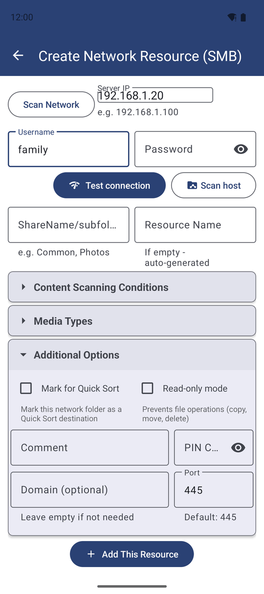
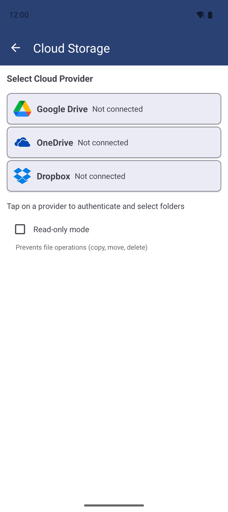
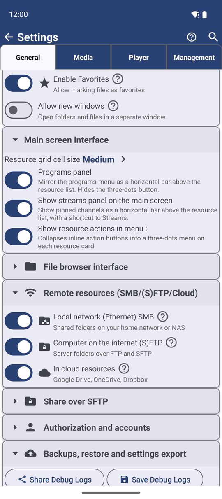

Сетевые папки - все редакции, кроме Lite; облачные хранилища - все, кроме Lite и FOSS
Подключение сетевых папок и облачных хранилищ
Подключайте общие папки с домашнего компьютера или NAS, серверы FTP/SFTP и каталоги Google Диска, Dropbox и OneDrive, управляйте видимостью групп источников и наслаждайтесь высокой скоростью доступа благодаря умному кэшированию.
Почему вам это понравится
Семейный фотоархив хранится на старом компьютере в гостиной, фильмы лежат на NAS в прихожей, а прошлогодние снимки выгружены на Google Диск. Совсем не обязательно копировать всё это в память телефона, чтобы посмотреть или навести порядок. Добавьте каждое хранилище один раз как ресурс, и оно будет открываться так же легко, как любая папка на смартфоне.
На этой странице представлен общий обзор: какие типы удалённых хранилищ можно подключить и как приложение оптимизирует скорость доступа к ним. Пошаговая настройка каждого типа сервера подробно разобрана в отдельных рецептах по ссылкам ниже.
- Сетевые папки и серверы FTP/SFTP: все редакции, кроме Lite. Облачные хранилища: Standard, noLegal, Photos, Legacy и VR (кроме Lite и FOSS). См. Сравнение семи редакций приложения.
- Для сетевой папки: телефон и компьютер/NAS в одной локальной сети Wi-Fi, логин и пароль к общей папке.
- Для сервера FTP или SFTP: сетевой адрес, логин с паролем или ключ SSH.
- Для облачного хранилища: учётная запись Google, Dropbox или Microsoft.
Подключение общей папки из домашней сети (SMB)
На главном экране нажмите Добавить, затем Сетевая папка («Добавить сетевые папки SMB»). На экране Создать сетевой ресурс (SMB) укажите:
- IP-адрес сервера, например
192.168.1.100. Не знаете точный адрес? Нажмите кнопку сканирования сети и выберите ваш компьютер или NAS из списка найденных устройств. - Имя пользователя и Пароль к общей папке, а также Домен (только если он используется в сети; иначе оставьте пустым).
- Порт - оставьте значение по умолчанию
445.
Нажмите Сканировать хост, чтобы получить список общих ресурсов на этом компьютере, отметьте нужные папки и добавьте их. Кнопка Тест соединения позволяет проверить правильность логина и пароля без добавления ресурса. Пошаговое руководство по настройке общего доступа в Windows см. в рецепте Подключение ресурсов SMB и папок Windows.

Подключение папки на сервере FTP или SFTP
Нажмите Добавить, затем SFTP / FTP. На экране Добавить ресурс S/FTP выберите протокол SFTP или FTP вверху; порт подставится автоматически (22 для SFTP, 21 для FTP). Введите Хост, Имя пользователя и путь к папке (например, /home/user/media или просто /).
Для SFTP поддерживается вход по Паролю или по SSH-ключу: вставьте текст ключа или нажмите Загрузить файл и укажите кодовую фразу ключа (если она есть). Нажмите Тест соединения, затем Добавить ресурс. Подробнее см. Подключение серверов SFTP и FTP.
Подключение папок Google Диска, Dropbox или OneDrive
Нажмите Добавить, затем Облачные хранилища («Нажмите на провайдера для авторизации и выбора папок»). Нажмите Google Диск, Dropbox или OneDrive, выполните вход в свою учётную запись в открывшемся окне и выберите нужную облачную папку.
Каждая выбранная папка становится отдельным независимым ресурсом. Особенности работы с каждым провайдером описаны в статьях Интеграция с Google Диском и Подключение Dropbox и OneDrive.

Временное скрытие целых групп источников
Если вы не пользуетесь сетевыми или облачными папками либо хотите скрыть их на время поездки, их можно отключить целыми группами. Откройте Настройки, вкладку Общие и найдите блок Удалённые ресурсы (SMB/(S)FTP/Облако). Там представлены три переключателя:
- Локальная сеть (Ethernet) SMB - общие папки домашней сети или NAS.
- Компьютер в интернете (S)FTP - серверы по протоколам FTP и SFTP.
- В облачных ресурсах - Google Диск, OneDrive, Dropbox.
Если отключить группу при наличии добавленных ресурсов этого типа, приложение спросит: «Скрыть эти папки?» и пояснит: ресурсы лишь временно скрываются, а не удаляются. Они моментально вернутся со всеми своими настройками, как только вы снова включите тумблер. При отключённой группе соответствующая карточка также скрывается из экрана добавления ресурсов.

Почему сетевые папки открываются мгновенно при повторном входе
Приложение реализует три встроенных механизма ускорения, благодаря которым удалённые папки открываются практически со скоростью локальной памяти:
- Сохранение структуры файлов. При повторном открытии сетевой папки список файлов выводится моментально, пока приложение тихо проверяет изменения на сервере в фоновом потоке.
- Локальное кэширование миниатюр. Превью сетевых и облачных снимков сохраняются на телефоне, избавляя от повторной загрузки картинок. Для гигантских папок (более 10 000 файлов) генерация превью отключается автоматически; вы можете настроить это опцией Отключить миниатюры в параметрах ресурса.
- Потоковый кэш воспроизведения. Если сервер не поддерживает пофрагментную отдачу видео, приложение кэширует ролик в локальный поток, гарантируя плавный просмотр без задержек и возможность возобновления после обрыва связи.
Управление сроком хранения потокового кэша
Откройте и найдите блок Фоновая синхронизация, сеть и кэш:
- Время жизни кэша стриминга (TTL) - сколько времени хранится закэшированный файл после последнего просмотра: Отключено, 1 день, 3 дня, 7 дней или 30 дней. Устаревшие копии удаляются автоматически.
- Очистка кэша стриминга - действие при выходе из плеера: Спрашивать каждый раз, Автоудаление или Автосохранение.
- Очистить кэш стриминга - немедленное удаление всех временных копий. Диалог подтверждения наглядно покажет, сколько памяти освободится. Если кэш пуст, приложение сообщит: «Кэш стриминга пуст. Ничего не закэшировано».
Перенос настроек на новый смартфон
При переносе данных на новый смартфон через стандартную функцию Android «Копирование приложений и данных» ваши сессии Google Диска и Dropbox переносятся автоматически. При первом открытии на новом устройстве эти облачные папки откроются сразу без дополнительных действий.
OneDrive хранит сессионные токены в изолированной системной области, поэтому на новом устройстве потребуется один раз войти в учётную запись заново.
Что вы получите
Домашний компьютер, сетевое хранилище NAS и облачные папки аккуратно размещены на главном экране рядом с локальными папками телефона. Списки файлов открываются моментально, превью отображаются без ожидания, а вы полностью контролируете объём занимаемого кэша.
Советы и решение проблем
- Быстрое восстановление медленных подключений. Если при одновременной загрузке нескольких файлов связь по SMB начинает сбоить, приложение отслеживает таймауты и своевременно восстанавливает соединение.
- Понятные сообщения о неверных путях SFTP. Если указанная в ресурсе SFTP папка удалена на сервере, приложение покажет прямое понятное сообщение «не найдено» вместо абстрактной ошибки сети.
- Красный значок сетевого ресурса обычно указывает на спящий режим компьютера или отключение от домашней сети Wi-Fi. Разбудите ПК и потяните список вниз для обновления.
- Полный перенос всех ресурсов. Помимо автопереноса облачных аккаунтов, вы можете экспортировать все ресурсы (включая сетевые пароли) в единый файл резервной копии - см. Экспорт и резервное копирование ресурсов.
- Двустороннее копирование. Передача файлов между телефоном и сетью полноценно работает в обоих направлениях - см. Копирование, перемещение и удаление файлов.